4 生态变量间的关联与相似
4.1 引言
生态学研究的一个核心任务是揭示自然界中各种现象之间的内在联系。在前面的章节中，我们学习了如何描述生态系统的特征，如种群数量、物种多样性等。然而，生态学的真正魅力在于理解这些特征之间的相互关系——环境因子如何影响物种分布？物种之间如何相互作用？群落结构如何响应环境变化？这些问题的答案往往隐藏在变量间的相关性或相似性之中。
相关性与相似性分析是揭示这些生态关系的重要统计工具。本章将带领大家从描述生态系统特征转向理解生态系统关系，这是生态学研究从现象描述到规律发现的关键跨越。对于生态学专业人才生而言，掌握这些分析方法不仅能够提升研究能力，更重要的是培养一种关系思维——学会从相互联系的角度来理解复杂的生态系统。
为什么生态学专业的学生需要学习相关性与相似性？首先，生态系统的本质是一个由无数相互关联的组分构成的复杂网络。从微观的基因表达到宏观的物种分布，从短期的种群动态到长期的气候变化响应，相关性分析为我们提供了量化这些关系的数学语言。例如，通过相关性分析，我们可以确定温度变化与物种丰富度之间的关系强度，或者评估不同环境因子对群落结构的相对重要性。
其次，相似性分析在生态学中具有广泛的应用价值。当我们研究不同群落的物种组成时，需要量化它们之间的相似程度；当我们分析功能性状的协变模式时，需要评估性状间的相似性关系；当我们构建生态网络时，需要基于相似性来识别物种间的相互作用。相似性分析不仅帮助我们理解生态系统的结构特征，还为保护生物学中的优先区识别、生态恢复中的参考系统选择提供了科学依据。
本章的内容安排遵循从基础到应用、从简单到复杂的学习路径。我们将首先介绍相关性统计的基础知识，包括Pearson相关系数、Spearman秩相关、Kendall’s \(\tau\)等常用方法。随后，我们将深入探讨更复杂的相关性概念，如偏相关分析、距离相关和互信息。
自相关分析是本章的另一个重要组成部分，它专门处理具有时间或空间依赖性的生态数据。时间自相关分析帮助我们理解生态过程的时间动态，空间自相关分析则揭示了生态现象的空间格局。此外，我们还将介绍系统发育相关性分析，帮助我们理解性状的系统发育保守性和生态适应机制。
相似性与距离度量构成了本章的后半部分内容。我们将系统介绍常用的相似性系数和距离度量方法，探讨功能性状间相关性的生态学意义，以及经济型谱理论在理解植物功能策略中的应用。
种内相关性和种间相关性分析将帮助我们理解生物个体和物种间的空间分布模式和相互作用关系。最后，群落相似性分析将整合前面学到的各种方法，全面揭示群落结构的空间格局和环境梯度响应。
学习相关性与相似性分析不仅是为了掌握统计工具，更重要的是培养系统思维的能力。在生态学研究中，很少有现象是孤立存在的，理解它们之间的相互关系往往比理解单个现象本身更为重要。通过本章的学习，希望大家能够建立起从关系角度思考生态问题的习惯，为未来的生态学研究和保护实践奠定坚实的统计基础。
4.2 生态变量的线性相关性
在生态学研究中，我们经常需要探索不同变量之间的关系。例如，我们可能想知道：森林中树木的胸径与树高之间是否存在某种关系？降水量与植物多样性之间有何联系？这些问题的答案往往需要通过相关性分析来获得。相关性分析为我们提供了一种量化变量间关系强度和方向的统计工具。
4.2.1 Pearson相关系数：线性关系的度量
假设我们正在研究一片温带森林中树木的胸径与树高的关系。我们测量了50棵树的胸径（cm）和树高（m），想要了解这两个变量之间是否存在线性关系。
Pearson相关系数是统计学中最经典的线性相关性度量方法，由卡尔·皮尔逊于1895年提出。它专门用于量化两个连续变量之间的线性关系强度和方向。其核心思想是通过计算两个变量的协方差与各自标准差的乘积之比来标准化协方差的大小，从而得到一个无量纲的相关系数。
数学定义：对于两个变量\(X\)和\(Y\)，Pearson相关系数\(r\)定义为：
\[r = \frac{\sum_{i=1}^{n}(X_i - \bar{X})(Y_i - \bar{Y})}{\sqrt{\sum_{i=1}^{n}(X_i - \bar{X})^2}\sqrt{\sum_{i=1}^{n}(Y_i - \bar{Y})^2}}\]
其中\(n\)是样本量，\(\bar{X}\)和\(\bar{Y}\)分别是\(X\)和\(Y\)的样本均值。
Pearson相关系数的取值范围在-1到1之间。正值表示正相关关系，即当一个变量增加时另一个变量也倾向于增加；负值表示负相关关系，即当一个变量增加时另一个变量倾向于减少；0值则表示两个变量之间不存在线性相关关系。
值得注意的是，Pearson相关系数只能检测线性关系，对于非线性关系可能会给出接近0的值，即使变量间存在强烈的非线性关联。这种方法对异常值比较敏感，且要求数据大致满足正态分布假设。
R代码实现：
# Pearson相关系数示例：树木胸径与树高的关系
set.seed(123)
# 模拟树木数据
n_trees <- 50
dbh <- rnorm(n_trees, mean = 25, sd = 5) # 胸径(cm)
height <- 2 + 0.3 * dbh + rnorm(n_trees, mean = 0, sd = 2) # 树高(m)
# 计算Pearson相关系数
pearson_cor <- cor(dbh, height, method = "pearson")
cat("Pearson相关系数：", round(pearson_cor, 3), "\n")## Pearson相关系数： 0.59# 可视化散点图
plot(dbh, height,
pch = 19, col = "blue",
xlab = "胸径 (cm)", ylab = "树高 (m)",
main = "树木胸径与树高的关系"
)
abline(lm(height ~ dbh), col = "red", lwd = 2)
legend("topleft",
legend = paste("r =", round(pearson_cor, 3)),
bty = "n"
)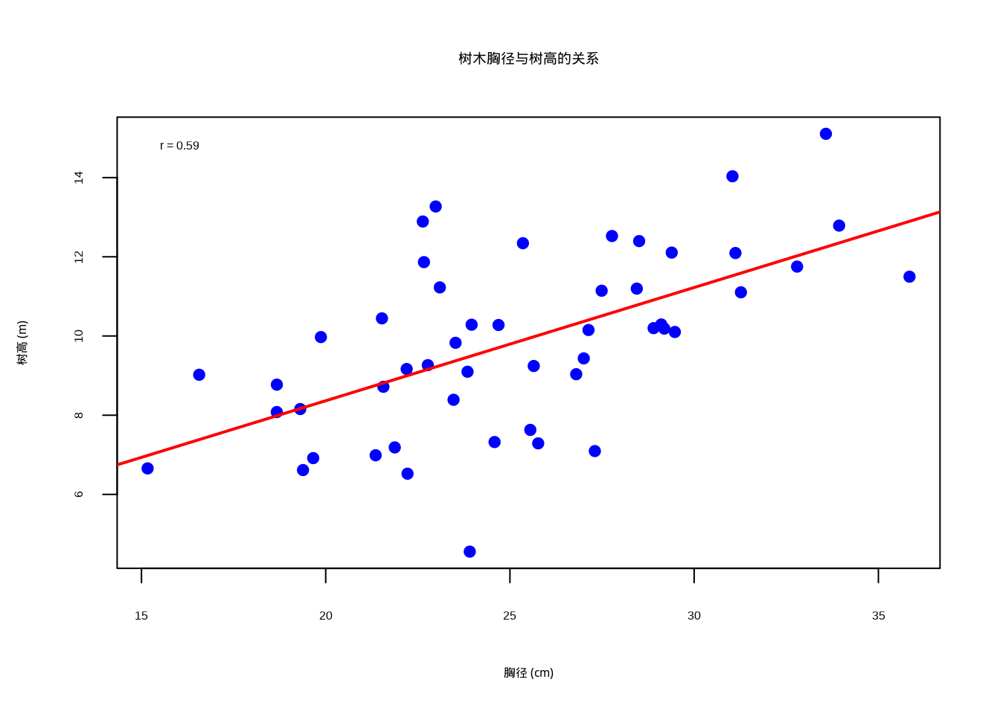
图4.1: 树木胸径与树高的关系散点图，显示线性相关关系。图中蓝色实心圆点表示观测数据，红色实线表示线性回归拟合线，通过颜色和点型的组合确保在彩色显示和黑白打印时都能清晰区分数据点和趋势线
图4.1展示了树木胸径与树高之间的线性相关关系。该散点图使用蓝色实心圆点表示每个观测样本，横轴为树木胸径（单位：厘米），纵轴为树高（单位：米）。图中添加的红色直线是基于线性回归模型lm(height ~ dbh)的拟合线，直观地显示了两个变量间的线性趋势。图例位于左上角，显示计算得到的Pearson相关系数数值，为读者提供了量化的相关强度指标。该可视化清晰地展示了生态学中常见的形态特征相关性，胸径较大的树木通常具有较高的树高，符合树木生长的基本规律。
## 相关性检验结果：
## t统计量：5.068
## p值：6.39e-06
## 95%置信区间：[0.373,0.746]在生态学研究中，Pearson相关系数常用于分析环境梯度与生物响应之间的线性趋势，如温度与物种丰富度的关系、土壤养分与植物生长的关系等。然而，生态学家需要谨慎使用这种方法，因为许多生态关系本质上是非线性的。此外，Pearson相关系数只能反映变量间的统计关联，不能证明因果关系，这在复杂的生态系统中尤为重要。
4.2.2 Spearman秩相关：单调关系的度量
在研究河流水质与底栖动物多样性的关系时，我们发现两者之间的关系可能不是严格的线性关系，但存在明显的单调趋势——水质越好，多样性越高。
Spearman秩相关系数是一种基于秩次的非参数相关性度量方法，由查尔斯·斯皮尔曼于1904年提出。与Pearson相关系数专注于线性关系不同，Spearman相关专门用于检测变量间的单调关系——即当一个变量增加时，另一个变量也倾向于增加（正单调关系）或减少（负单调关系），无论这种关系是线性的还是非线性的。
这种方法的独特之处在于它完全基于变量的秩次信息，而不是原始数值大小，这使得它对异常值具有天然的鲁棒性。在计算Spearman相关系数时，我们首先将每个变量的观测值转换为秩次（即按大小排序后的位置），然后计算这些秩次之间的Pearson相关系数。
数学定义：对于两个变量\(X\)和\(Y\)，Spearman相关系数\(\rho\)定义为：
\[\rho = 1 - \frac{6\sum_{i=1}^{n}d_i^2}{n(n^2-1)}\]
其中\(d_i\)是第\(i\)个观测在\(X\)和\(Y\)上的秩次差，\(n\)是样本量。
Spearman相关系数的取值范围在-1到1之间。正值表示正单调关系，负值表示负单调关系，0值表示没有单调关系。值得注意的是，Spearman相关系数度量的是变量间关系的单调性强度，而不是线性强度。这意味着即使两个变量之间存在强烈的非线性单调关系，Spearman相关也能给出接近1或-1的值，而Pearson相关在这种情况下可能给出接近0的值。
R代码实现：
# 加载数据
load("data/spearman.RData")
# 计算Spearman相关系数
spearman_cor <- cor(water_quality, macroinvertebrate_diversity,
method = "spearman")
# 进行相关性检验
spearman_test <- cor.test(water_quality, macroinvertebrate_diversity,
method = "spearman")## Spearman相关系数： 0.991## Spearman检验p值： <2e-16# 可视化关系
plot(water_quality, macroinvertebrate_diversity,
pch = 17, col = "darkgreen",
xlab = "水质指数", ylab = "底栖动物多样性",
main = "河流水质与底栖动物多样性的关系"
)
lines(lowess(water_quality, macroinvertebrate_diversity),
col = "red", lwd = 2, lty = 2)
legend("topleft",
legend = paste("ρ =", round(spearman_cor, 3)),
bty = "n"
)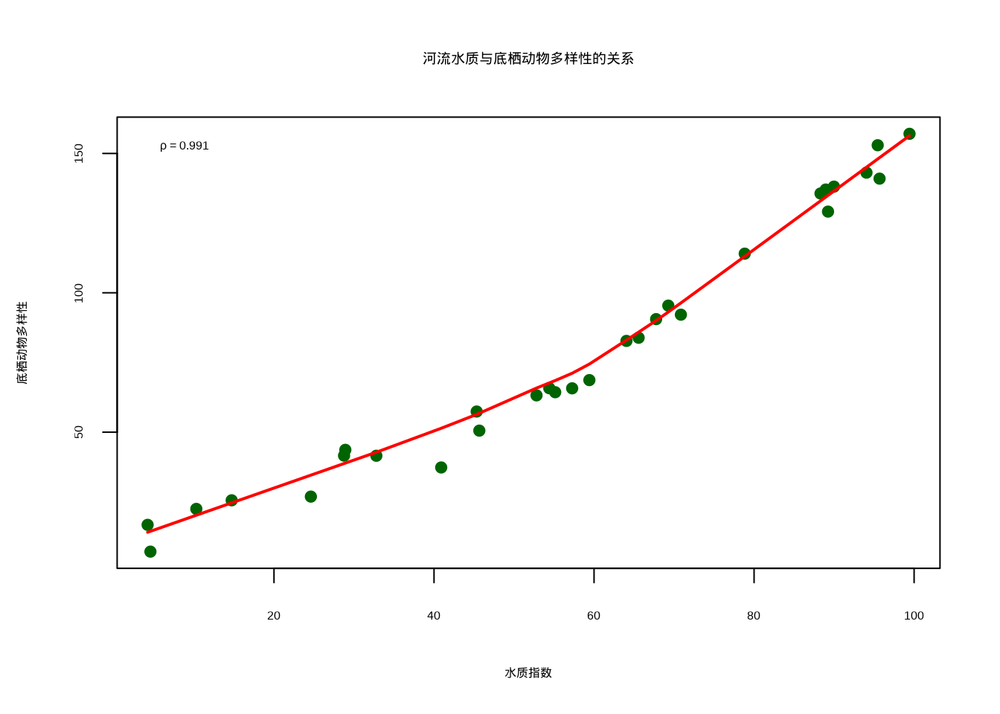
图4.2: 河流水质与底栖动物多样性的关系散点图，显示单调非线性关系。图中深绿色三角形表示观测数据，红色虚线表示局部加权回归拟合线
图4.2展示了河流水质与底栖动物多样性之间的单调非线性关系。该散点图使用深绿色实心圆点表示各观测样本，横轴为水质指数（综合反映水体理化性质），纵轴为底栖动物多样性（反映河流生态系统健康状况）。图中添加的红色曲线是基于局部加权回归平滑（LOWESS）的非参数拟合线，能够更好地捕捉变量间的非线性趋势。图例位于左上角，显示计算得到的Spearman相关系数（ρ），该系数衡量的是变量间的单调相关强度而非线性相关强度。该可视化清晰地展示了水质改善与底栖动物多样性增加之间的正相关关系，体现了Spearman相关在处理生态学中常见非线性关系时的优势。
在生态学研究中，这种特性使得Spearman相关特别适用于分析等级数据、存在异常值的数据、或者分布未知的数据。例如，在分析环境梯度对物种分布的影响时，许多生态响应关系本质上是单调但非线性的，如物种丰富度随海拔或纬度的变化、生物量随养分浓度的变化等。此外，Spearman相关对数据的分布形式没有严格要求，不要求变量满足正态分布假设，这使其在处理生态学中常见的偏态分布数据时具有明显优势。然而，生态学家需要注意，Spearman相关只能检测单调关系，对于非单调的复杂关系（如U型关系、周期性关系）仍然无法有效识别。
4.2.3 Kendall’s \(\tau\)：基于一致对的比例
在研究鸟类迁徙时间与气温变化的关系时，我们想要一个对异常值不敏感的相关性度量，因为个别极端天气事件可能影响整体趋势的判断。
Kendall’s \(\tau\)（tau）是另一种基于秩次的非参数相关性度量方法，由英国统计学家莫里斯·肯德尔于1938年提出。与Spearman相关类似，Kendall’s \(\tau\)也用于度量变量间的单调关系，但其计算原理和统计性质有所不同。Kendall’s \(\tau\)的核心思想是基于数据对的一致性来评估变量间的关系强度。具体而言，它考察所有可能的数据对（共\(\frac{1}{2}n(n-1)\)对），统计其中一致对和不一致对的数量。一致对是指两个变量在排序上保持一致，不一致对则是指排序相反的数据对。
数学定义：对于两个变量\(X\)和\(Y\)，Kendall’s \(\tau\)定义为：
\[\tau = \frac{(一致对的数量) - (不一致对的数量)}{\frac{1}{2}n(n-1)}\]
其中一致对是指当\(X_i < X_j\)时\(Y_i < Y_j\)，或者当\(X_i > X_j\)时\(Y_i > Y_j\)的数据对。
Kendall’s \(\tau\)的计算公式反映了这种一致对与不一致对的净比例，其取值范围在-1到1之间，与Pearson和Spearman相关系数相同。
R代码实现：
## Kendall's τ： -0.54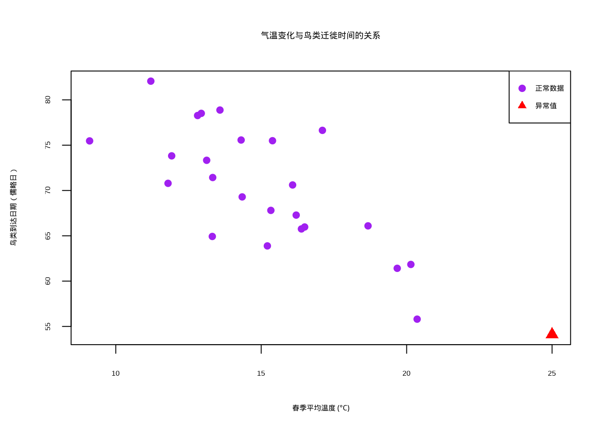
图4.3: 鸟类迁徙时间与气温变化的关系散点图，显示对异常值的稳健性。图中紫色圆点表示正常观测数据，红色三角形标记异常值
图4.3展示了Kendall’s τ在存在异常值情况下的稳健性。该散点图可视化春季平均温度与鸟类迁徙到达日期之间的关系，其中紫色圆点代表正常观测数据，红色三角形标记表示人为添加的异常值（异常温暖的年份）。图中清晰地显示了温度升高与鸟类提前到达之间的负相关趋势，但异常值的存在可能对其他相关性系数产生较大影响。Kendall’s τ基于数据对的排序一致性进行计算，对异常值相对不敏感，因此在生态学时间序列数据分析中具有重要价值，特别是在处理气候变化对物候影响的长期观测数据时，能够提供更加稳健的相关性估计。
## 不同相关性系数的比较：
## Pearson：-0.79
## Spearman：-0.692
## Kendall's τ：-0.54Kendall’s \(\tau\)的一个重要特点是其对异常值的极端稳健性。由于它只关注数据对的相对排序而不关心具体的数值大小，单个异常值对整体估计的影响非常有限。这种特性使得Kendall’s \(\tau\)特别适用于生态学中常见的小样本研究、存在测量误差的数据、或者包含极端观测值的情况。例如，在气候变化对物候影响的研究中，个别异常温暖的年份可能会显著影响Pearson相关系数的估计，但对Kendall’s \(\tau\)的影响相对较小。另一个重要优势是Kendall’s \(\tau\)具有更直观的概率解释：当Kendall’s \(\tau\)等于0.6时，可以理解为任意随机选择的一对观测值，它们在这两个变量上具有一致排序的概率比不一致排序的概率高60%。这种概率解释在生态学应用中往往比相关系数本身更容易理解和传达。此外，Kendall’s \(\tau\)的抽样分布在小样本情况下更加稳定，其标准误的计算也比Spearman相关更为精确。然而，Kendall’s \(\tau\)的计算复杂度较高，对于大样本数据计算时间较长，这是其在实际应用中的一个局限。在生态学研究中，Kendall’s \(\tau\)特别适用于时间序列分析、物种对环境梯度的响应研究、以及需要处理等级数据或存在大量结（ties，即数据中大量出现相同的观测值）的情况。
4.2.4 偏相关分析
在研究森林生产力与降水量的关系时，我们发现温度可能同时影响这两个变量。为了了解降水量对生产力的直接影响，我们需要控制温度的影响。
偏相关分析是一种重要的统计技术，用于在控制其他变量（称为控制变量或协变量）的影响后，评估两个变量之间的净相关关系。在生态学研究中，变量间的关系往往受到多种环境因子的共同影响，简单的双变量相关分析可能无法揭示变量间的真实关系。偏相关分析通过数学方法”剥离”控制变量的影响，使我们能够更准确地评估目标变量间的直接关系。
这种方法的理论基础可以追溯到20世纪初，但直到多元统计方法的发展才在生态学中得到广泛应用。偏相关分析的核心思想是：如果两个变量\(X\)和\(Y\)都与第三个变量\(Z\)相关，那么\(X\)和\(Y\)之间的简单相关可能部分或完全由它们与\(Z\)的共同关系所驱动。通过控制\(Z\)的影响，我们可以得到\(X\)和\(Y\)之间的”纯净”相关，即排除了\(Z\)的混淆效应后的直接关系。
偏相关系数的计算基于残差分析的思想。具体而言，我们首先通过线性回归分别从\(X\)和\(Y\)中去除\(Z\)的影响，得到两个残差序列，然后计算这两个残差序列之间的相关系数。这个相关系数就是\(X\)和\(Y\)在控制\(Z\)后的偏相关系数。不过目前我们还为涉及回归的知识，因此我们来介绍一种计算上更加简单的方式。
数学定义：对于变量\(X\)、\(Y\)和控制变量\(Z\)，\(X\)和\(Y\)在控制\(Z\)后的偏相关系数为：
\[r_{XY.Z} = \frac{r_{XY} - r_{XZ}r_{YZ}}{\sqrt{(1-r_{XZ}^2)(1-r_{YZ}^2)}}\]
其中\(r_{XY}\)、\(r_{XZ}\)、\(r_{YZ}\)分别是相应的Pearson相关系数。
从数学上看，偏相关系数可以理解为在保持\(Z\)不变的情况下，\(X\)和\(Y\)之间的条件相关。有兴趣的同学可以自行证明一下，该定义与上述提到的残差定义方法，其实是等价的。
R代码实现：
## 降水量与生产力的简单相关系数： 0.33| precipitation | temperature | productivity | |
|---|---|---|---|
| precipitation | 1.000 | -0.223 | 0.389 |
| temperature | -0.223 | 1.000 | 0.666 |
| productivity | 0.389 | 0.666 | 1.000 |
##
## 控制温度后，降水量与生产力的偏相关系数： 0.389在生态学应用中，偏相关分析具有极其重要的价值。例如，在研究森林生产力与降水量的关系时，温度可能同时影响这两个变量——温度较高时通常降水量也较多，同时温度本身也直接影响植物的光合作用效率。如果不控制温度的影响，我们可能会高估降水量对生产力的直接作用。偏相关分析能够帮助我们识别这种”伪相关”或”间接相关”，从而更准确地理解生态系统的内在机制。此外，偏相关分析在生态网络构建、物种相互作用分析、环境因子筛选等复杂生态学问题中都有广泛应用。然而，生态学家需要注意，偏相关分析仍然基于线性关系的假设，且要求控制变量与目标变量之间的关系大致满足线性模型的前提条件。在高度非线性的生态系统中，偏相关分析的结果需要谨慎解释。
4.3 生态变量的非线性相关
生态系统中许多关系都是非线性的，如物种-面积关系、剂量-响应关系、种群增长模型等。传统的线性相关方法往往无法充分描述这些复杂模式。非线性关系度量包括后面将要介绍的距离相关、互信息等方法，它们不依赖于线性假设，能够捕捉各种复杂的关系模式。在生态学研究中，非线性关系比线性关系更为普遍，因为生态系统中的许多过程都涉及阈值效应、饱和效应、最优区间和反馈机制等非线性动态。例如，物种-面积关系通常呈现幂律形式，种群增长遵循逻辑斯蒂曲线，功能性状间的权衡关系可能呈现U型或S型模式，物种对环境梯度的响应往往存在最优区间。这些复杂的非线性模式无法用传统的线性相关方法来充分描述，因此需要专门的非线性关系度量方法。
距离相关和互信息是两种主要的非线性关系度量方法，它们各有特点和适用场景。距离相关基于变量在距离空间中的协方差来度量依赖关系，能够检测任何形式的统计依赖，包括线性和非线性关系。它的一个重要性质是当且仅当两个变量相互独立时，距离相关系数等于零，这使其成为检验变量独立性的有力工具。距离相关对变量的分布形式没有要求，适用于连续变量和混合类型的数据，但在计算复杂度上相对较高，特别是对于大样本数据。
互信息则基于信息论的概念，量化两个变量间共享的信息量。它能够检测任何类型的统计依赖关系，包括线性和非线性关系、单调和非单调关系。互信息的一个重要优势是它对变量的数据类型没有限制，可以处理连续变量、离散变量和分类变量，这使其特别适合生态学中常见的混合数据类型分析。此外，互信息具有清晰的信息论解释，能够提供关于变量间信息共享程度的直观理解。
除了距离相关和互信息，还有其他非线性关系度量方法，如基于核的方法、基于图的方法和基于模型的方法。基于核的方法通过将数据映射到高维特征空间来检测非线性关系，基于图的方法通过构建变量间的图结构来识别依赖关系，基于模型的方法则通过拟合非线性模型来量化关系强度。在生态学实践中，选择哪种非线性关系度量方法需要考虑数据的特征、研究的目的和计算资源的限制。通常建议使用多种方法进行比较，以获得对生态关系更全面和稳健的认识。
4.3.1 距离相关
在研究植物功能性状之间的关系时，我们可能发现某些性状间存在复杂的非线性关系，传统的线性相关方法无法有效捕捉这些模式。
距离相关是一种革命性的非参数相关性度量方法，由统计学家Gábor J. Székely等人于2007年提出，它能够检测任意分布变量间的依赖关系，包括线性和非线性关系。与传统的相关性度量方法不同，距离相关不依赖于变量间的线性或单调关系假设，而是基于变量间距离的协方差来度量相关性。这种方法的独特之处在于它能够检测任何形式的统计依赖关系，只要这种依赖关系在概率意义上是存在的。
距离相关的核心概念是距离协方差和距离方差，这些概念扩展了传统的协方差和方差概念，使其能够捕捉更复杂的依赖模式。距离协方差度量的是两个变量在距离空间中的协同变化程度，而距离方差则度量单个变量在距离空间中的变异程度。
数学定义：对于两个变量\(X\)和\(Y\)，距离相关系数定义为：
\[dCor(X,Y) = \frac{dCov(X,Y)}{\sqrt{dVar(X)dVar(Y)}}\]
其中\(dCov\)是距离协方差，\(dVar\)是距离方差。距离协方差就是量化这种”距离同步性”的程度。如果两个变量的距离模式高度同步，距离协方差就大；如果它们的距离模式没有关系，距离协方差就接近0。距离方差则衡量单个变量内部的”距离变异”程度。如果一个变量的所有值都很接近，距离方差就小；如果值之间差异很大，距离方差就大。
距离相关的核心思想很简单：通过比较所有数据点之间的距离模式来检测变量间的依赖关系。想象你有两个变量，比如植物的叶面积和光合速率。如果这两个变量相关，那么当两个植物的叶面积很接近时，它们的光合速率也应该很接近；当两个植物的叶面积差异很大时，它们的光合速率差异也应该很大。为了更直观地理解距离相关的概念，我们可以通过下面的示意图来展示弱距离相关和强距离相关的区别：
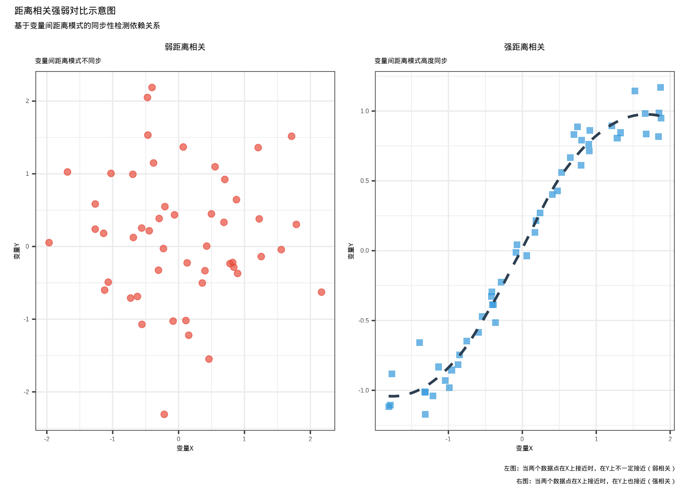
图4.4: 距离相关强弱对比示意图：左图显示弱距离相关（红色圆形散点，变量间距离模式不同步），右图显示强距离相关（蓝色方形散点+虚线趋势线，变量间距离模式高度同步）
上图显示了弱距离相关和强距离相关的区别：
弱距离相关（左图）：变量X和Y之间没有明显的依赖关系。当两个数据点在X轴上很接近时，它们在Y轴上的值可能相差很大，反之亦然。这种距离模式的不同步导致距离相关系数接近0。
强距离相关（右图）：变量X和Y之间存在明显的非线性依赖关系。当两个数据点在X轴上很接近时，它们在Y轴上的值也很接近；当两个数据点在X轴上相距较远时，它们在Y轴上的值也相距较远。这种距离模式的同步性导致距离相关系数接近1。
距离相关的核心思想正是通过比较所有数据点之间的距离模式来检测变量间的依赖关系。如果两个变量的距离模式高度同步（强相关），那么距离协方差就大；如果它们的距离模式没有关系（弱相关），距离协方差就接近0。
距离相关系数的取值范围在0到1之间，其中0表示变量间完全独立，1表示变量间存在确定的函数关系。值得注意的是，距离相关具有一个非常重要的性质：当且仅当两个变量相互独立时，距离相关系数等于0。这一性质使得距离相关成为检验变量独立性的有力工具。
在生态学研究中，这种特性具有重要的应用价值。许多生态关系本质上是非线性的，如物种-面积关系、功能性状权衡、种群动态模型等，传统的线性相关方法往往无法充分描述这些复杂模式。距离相关能够有效捕捉这些非线性关系，为生态学家提供了更全面的分析工具。例如，在分析植物功能性状间的关系时，我们可能发现叶面积与比叶重之间存在U型关系——中等大小的叶片具有最高的比叶重，而过大或过小的叶片比叶重较低。这种复杂的非线性关系用Pearson或Spearman相关可能无法有效检测，但距离相关能够给出显著的非零值。此外，距离相关对变量的分布形式没有要求，适用于连续变量、离散变量甚至混合类型的数据，这使其在处理生态学中常见的复杂数据类型时具有明显优势。然而，生态学家需要注意，距离相关的计算复杂度较高，对于大样本数据可能需要较长的计算时间，且其统计性质在小样本情况下的表现仍需谨慎评估。
## 距离相关系数： 0.454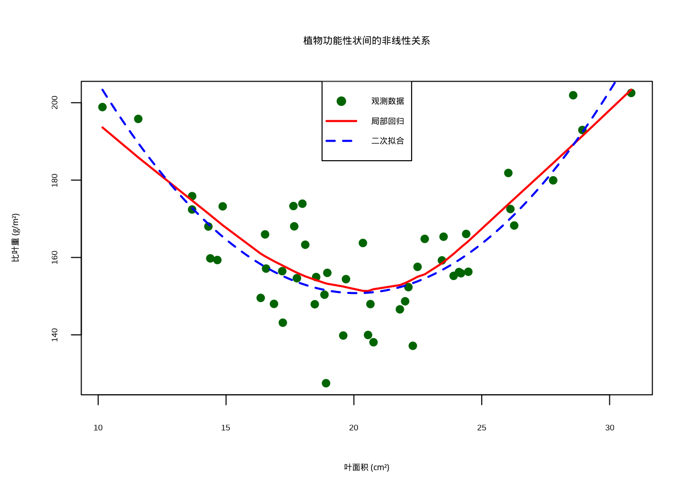
图4.5: 植物功能性状间的非线性关系散点图，显示U型关系。图中深绿色菱形表示观测数据，红色实线表示局部回归拟合曲线，蓝色虚线表示二次多项式拟合曲线
4.3.2 互信息
在生态学中，许多变量间的关系并非简单的线性或单调模式，而是复杂的非线性依赖。例如在研究环境因子对物种分布的联合影响时，我们想要量化多个环境变量共同包含的关于物种分布的信息量。这时，传统的相关性分析方法可能无法充分捕捉这些复杂关系，因此需要更灵活的度量方法。
互信息是基于信息论的依赖关系度量，它量化了两个变量间共享的信息量。与传统的相关性不同，互信息能够捕捉任何类型的统计依赖关系。互信息的概念源于信息论，由克劳德·香农在1948年提出，最初用于通信系统中的信息传输研究，后来被广泛应用于统计分析和机器学习领域。
互信息的核心思想是衡量知道一个变量的值能够减少另一个变量不确定性的程度。从信息论的角度来看，如果两个变量完全独立，那么知道其中一个变量的值不会提供关于另一个变量的任何信息，此时互信息为零；如果两个变量存在完全确定的函数关系，那么知道一个变量的值就能完全确定另一个变量，此时互信息达到最大值。
数学定义：对于两个离散随机变量\(X\)和\(Y\)，互信息定义为：
\[I(X;Y) = \sum_{x\in X}\sum_{y\in Y} p(x,y) \log\left(\frac{p(x,y)}{p(x)p(y)}\right)\]
对于连续变量，需要使用积分形式。其中，\(p(x,y)\)表示变量\(X\)和\(Y\)联合概率质量函数，\(p(x)\)和\(p(y)\)分别表示变量\(X\)和\(Y\)的边缘概率质量函数。
互信息的一个重要特性是它对变量间关系的类型没有限制，能够检测线性和非线性关系、单调和非单调关系，甚至是复杂的多模态关系。这种普适性使得互信息在生态学研究中具有独特的优势，因为许多生态关系本质上是非线性和复杂的。例如，在研究环境因子对物种分布的影响时，物种对环境梯度的响应往往不是简单的线性关系，而是存在阈值效应、饱和效应或最优区间等复杂模式。互信息能够有效捕捉这些复杂的依赖关系，而传统的线性相关方法可能会遗漏重要的生态信息。
另一个重要特点是互信息对变量的分布形式没有严格要求，适用于连续变量、离散变量甚至混合类型的数据。在生态学中，我们经常需要处理不同类型的数据，如连续的环境变量（温度、降水）、离散的分类变量（生境类型、土壤类型）和二元变量（物种出现/缺失）。互信息提供了一个统一的框架来处理这些不同类型变量间的依赖关系。
此外，互信息具有对称性，即\(I(X;Y) = I(Y;X)\)，这反映了变量间信息共享的相互性。互信息的取值范围从0到正无穷，其中0表示变量间完全独立，正值表示存在信息共享。为了便于解释，有时会将互信息标准化到[0,1]区间，如通过除以变量的熵来得到标准化互信息。在生态学应用中，互信息特别适合用于特征选择、生态网络构建、物种分布建模等需要处理复杂非线性关系的场景。
R代码实现：
# 计算互信息
library(infotheo) # 需要安装：install.packages("infotheo")
load("data/mutinformation.RData")
# 离散化连续变量（互信息计算需要离散数据）
temp_disc <- discretize(temperature, disc = "equalfreq", nbins = 5)
precip_disc <- discretize(precipitation, disc = "equalfreq", nbins = 5)
# 计算互信息
mi_temp <- mutinformation(temp_disc, species_presence)
mi_precip <- mutinformation(precip_disc, species_presence)
mi_joint <- mutinformation(cbind(temp_disc, precip_disc), species_presence)## 互信息分析结果：
## 温度与物种出现的互信息：0.038
## 降水量与物种出现的互信息：0.032
## 温度与降水量联合与物种出现的互信息：0.089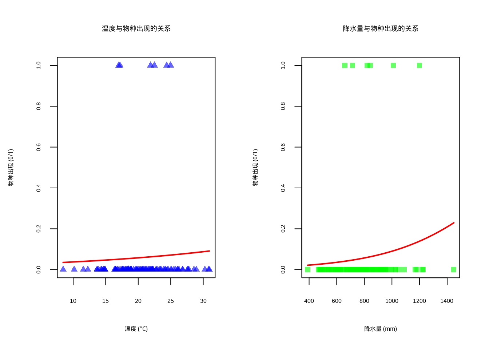
图4.6: 环境因子与物种分布的关系逻辑回归曲线。左图蓝色半透明三角形表示温度观测数据，右图绿色半透明方形表示降水量观测数据，两图中红色实线均表示逻辑回归拟合曲线
图4.6展示了环境因子与物种分布之间的非线性关系，采用逻辑回归曲线可视化二元响应变量（物种出现/不出现）与连续环境因子的关系。该图采用双面板布局，左侧显示温度与物种出现的关系，右侧显示降水量与物种出现的关系。蓝色半透明圆点表示温度观测数据，绿色半透明圆点表示降水量观测数据，红色曲线为逻辑回归拟合线，表示物种出现的概率随环境因子变化的趋势。这种可视化方法能够清晰地展示环境因子对物种分布的非线性影响，特别适用于生态位模型和物种分布预测研究。逻辑回归曲线呈现典型的S型特征，反映了物种对环境因子的响应阈值，为理解物种-环境关系提供了直观的图形表示。
4.4 生态相似性与距离度量
在前面的小节中，我们主要讨论了变量间的数值相关性——无论是线性相关、非线性相关，还是时间或空间上的自相关。这些分析关注的是变量间关系的强度和方向。现在，我们将转向一个相关但不同的概念：相似性与距离。
相似性分析的核心是量化不同样本、群落或个体之间的相似程度或差异大小。与相关性分析不同，相似性分析更关注分类、比较和排序，而非变量间的函数关系。在生态学中，相似性分析广泛应用于群落分类、物种分布格局研究、功能性状比较以及生态区划等场景。
相似性分析与相关性分析既有联系又有区别：相关性通常度量变量间的协变关系，而相似性则度量样本间的整体差异；相关性分析通常基于连续变量的数值计算，而相似性分析可以处理二元数据、分类数据和数量数据；相关性分析的结果是相关系数，而相似性分析的结果是相似性系数或距离矩阵。
本小节将从基础到应用，系统介绍生态学中常用的相似性系数和距离度量方法，包括二元数据相似性、数量数据相似性、功能性状相关性、种内和种间相关性，以及群落相似性分析的综合方法。
4.4.1 常用相似性系数
在生态学研究中，群落相似性分析是理解物种分布格局、群落构建机制以及环境梯度影响的关键工具。生态学家经常面临如何量化不同样地或群落之间相似程度的问题，这需要根据数据类型和研究目的选择合适的相似性系数。
二元数据相似性：当生态数据仅记录物种存在与否时（如植物名录、动物分布记录），二元相似性系数是理想的选择。Jaccard系数是最经典的二元相似性度量，它计算两个群落共享物种数量占所有物种数量的比例，特别适用于比较物种组成相似性。其数学定义为：\(J = \frac{a}{a+b+c}\)，其中\(a\)为两个群落共有的物种数，\(b\)和\(c\)分别为各自特有的物种数。Sørensen系数则对物种丰富度更为敏感，其定义为：\(S = \frac{2a}{2a+b+c}\)，在生态学调查中广泛用于评估\(\beta\)多样性。这些系数在保护生物学中尤为重要，例如评估不同保护区的物种重叠程度，或者在恢复生态学中监测群落演替过程中的物种组成变化。
数量数据相似性：当生态数据包含物种多度信息时（如个体数量、生物量、盖度等），数量相似性系数能更准确地反映群落结构差异。Bray-Curtis距离是最常用的数量相似性度量，它考虑了物种的相对多度差异，对稀有物种不敏感而对常见物种变化敏感，非常适合分析群落梯度变化。其数学定义为：\(BC = 1 - \frac{2\sum \min(x_i, y_i)}{\sum x_i + \sum y_i}\)，其中\(x_i\)和\(y_i\)分别表示两个群落中第\(i\)个物种的多度。Morisita-Horn指数则对优势物种特别敏感，能有效识别群落中的优势种变化模式，在分析人为干扰或环境压力对群落结构的影响时具有独特优势。这些数量相似性系数在环境监测、污染生态学和全球变化生态学研究中广泛应用。
距离度量：除了专门的生态学相似性系数，传统的统计距离度量在多元生态数据分析中也发挥重要作用。欧氏距离是最基础的几何距离，计算样本在多维空间中的直线距离，适用于环境因子数据的比较分析。Mahalanobis距离则考虑了变量间的协方差结构，能更准确地反映多元数据的真实差异，在生态位分析和环境梯度研究中特别有用。这些距离度量为生态学家提供了量化样本间差异的数学工具，支持各种多元统计分析方法如聚类分析、排序分析和判别分析的实施。
在R语言中，这些相似性系数的计算非常便捷。对于二元数据，可以使用vegan包中的vegdist函数计算Jaccard和Sørensen系数：
library(vegan)
# 创建示例二元数据
binary_data <- matrix(c(1, 1, 0, 0, 1, 0, 1, 1, 0, 1, 0, 1), nrow = 3)
rownames(binary_data) <- c("样地A", "样地B", "样地C")
colnames(binary_data) <- c("物种1", "物种2", "物种3", "物种4")
# 计算Jaccard相似性
jaccard_dist <- vegdist(binary_data, method = "jaccard", binary = TRUE)
# 计算Sørensen相似性
sorensen_dist <- vegdist(binary_data, method = "bray", binary = TRUE)对于数量数据，Bray-Curtis距离的计算同样使用vegdist函数：
# 创建示例数量数据
abundance_data <- matrix(c(10, 5, 0, 2, 8, 3, 15, 1, 0, 7, 4, 12),
nrow = 3)
rownames(abundance_data) <- c("群落A", "群落B", "群落C")
colnames(abundance_data) <- c("物种1", "物种2", "物种3", "物种4")
# 计算Bray-Curtis距离
bray_curtis_dist <- vegdist(abundance_data, method = "bray")传统距离度量的计算可以使用基础R函数：
# 计算欧氏距离
euclidean_dist <- dist(abundance_data, method = "euclidean")
# 计算Mahalanobis距离（需要协方差矩阵）
cov_matrix <- cov(abundance_data)
# Mahalanobis距离计算较为复杂，通常用于多元统计分析结果解释与生态学意义：理解相似性系数的数值含义对于正确解释生态学结果至关重要。对于相似性系数（如Jaccard、Sørensen），数值范围在0到1之间，数值越大表示群落间相似性越高。通常认为：\(J > 0.75\)表示高度相似，\(0.5 < J \leq 0.75\)表示中等相似，\(J \leq 0.5\)表示低度相似。对于距离系数（如Bray-Curtis、欧氏距离），数值范围也在0到1之间（Bray-Curtis）或0到无穷大（欧氏距离），但数值越大表示差异越大。Bray-Curtis距离\(BC < 0.3\)通常表示群落结构相似，\(0.3 \leq BC < 0.6\)表示中等差异，\(BC \geq 0.6\)表示显著差异。
在实际生态学研究中，相似性系数的解释需要考虑研究背景和生态学预期。例如，在环境梯度研究中，沿着梯度方向相似性系数的规律性变化可能反映了环境过滤的作用；在岛屿生物地理学中，距离主岛越远的岛屿与主岛的相似性越低，可能反映了扩散限制的影响。这些相似性系数和距离度量为生态学家提供了强大的工具来量化群落间的相似性和差异性，支持后续的聚类分析、排序分析等多元统计方法。
4.4.2 功能性状间相关性
功能性状相关性分析是功能生态学的核心内容，旨在揭示植物和其他生物在进化过程中形成的性状组合模式。这些相关模式反映了生物对环境适应的策略性选择，是理解生态位分化、群落构建和生态系统功能的关键。
功能性状相关性：功能性状间的相关性分析主要关注两个重要方面：性状间的权衡关系和协变模式。性状权衡是指生物在资源有限条件下，对多个功能性状进行权衡取舍的进化策略。例如，植物在叶片构建上需要在光合速率和防御能力之间进行权衡，快速生长的物种通常具有较低的防御投资。这种权衡关系可以用负相关关系来表示，其数学表达即为Peason相关系数：\(r_{xy} = \frac{\sum (x_i - \bar{x})(y_i - \bar{y})}{\sqrt{\sum (x_i - \bar{x})^2 \sum (y_i - \bar{y})^2}}\)，其中\(x_i\)和\(y_i\)分别表示第\(i\)个个体在两个性状上的测量值。
功能性状的协变模式则描述了多个性状如何协同变化，形成特定的功能综合征。例如，在干旱环境中，植物往往同时表现出深根系、厚角质层和小叶面积等性状组合。这些协变模式可以通过主成分分析或多变量回归等方法进行量化。生态学上，这些相关性反映了生物对不同环境压力的适应机制，如资源获取策略、胁迫耐受策略和竞争策略等。在群落生态学中，功能性状相关性分析有助于理解物种共存机制和生态系统稳定性。
经济型谱：经济型谱理论是功能生态学的重要框架，描述了生物在资源投资和收益之间的权衡关系。叶片经济型谱是最经典的经济型谱，它揭示了叶片性状在全球尺度上的协变规律。具体表现为叶片氮含量、比叶面积与光合速率之间的正相关关系，以及与叶片寿命之间的负相关关系。这种权衡反映了植物在快速资源获取和长期资源保存之间的策略选择，其数学关系可以用线性或非线性回归模型来描述：\(y = \beta_0 + \beta_1x + \epsilon\)。
根系经济型谱则描述了根系功能性状的协变模式，涉及细根直径、根组织密度、根寿命等性状。通常，快速资源获取型的根系具有较细的直径、较低的组织密度和较短的寿命，而资源保存型的根系则相反。这些经济型谱的发现为理解植物功能策略的普遍模式提供了理论基础，在全球变化生态学、生物地理学和生态系统管理中具有重要应用价值。它们帮助我们预测植物群落对气候变化和人为干扰的响应，以及生态系统功能的变化趋势。
在R语言中，功能性状相关性分析可以通过多种统计方法实现。图??展示了功能性状相关性矩阵的可视化和主成分分析结果：
| 比叶面积| 叶片 | 含量| 光合速率| | 叶片寿命| | ||
|---|---|---|---|---|
| 比叶面积 | 1 | 0000000| 0 | 9964051| 0 | 9906672| -0 | 9740756| |
| 叶片氮含量 | 0. | 964051| 1. | 000000| 0. | 821403| -0. | 647267| |
| 光合速率 | 0 | 9906672| 0 | 9821403| 1 | 0000000| -0 | 9951811| |
| 叶片寿命 | -0 | 9740756| -0 | 9647267| -0 | 9951811| 1 | 0000000| |
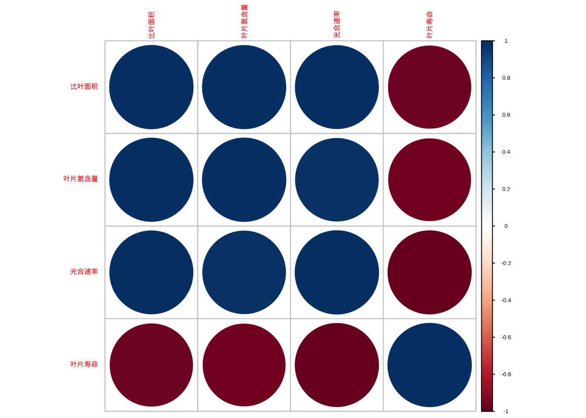
图4.7: 功能性状相关性矩阵图和主成分分析双标图
| 主成分 | 标 | 差| 方差比例 | 累积方差比例| | ||
|---|---|---|---|---|
| PC1 | PC1 | 1.988 | 0.988 | 0.988 |
| PC2 | PC2 | 0.211 | 0.011 | 0.999 |
| PC3 | PC3 | 0.059 | 0.001 | 1.000 |
| PC4 | PC4 | 0.015 | 0.000 | 1.000 |
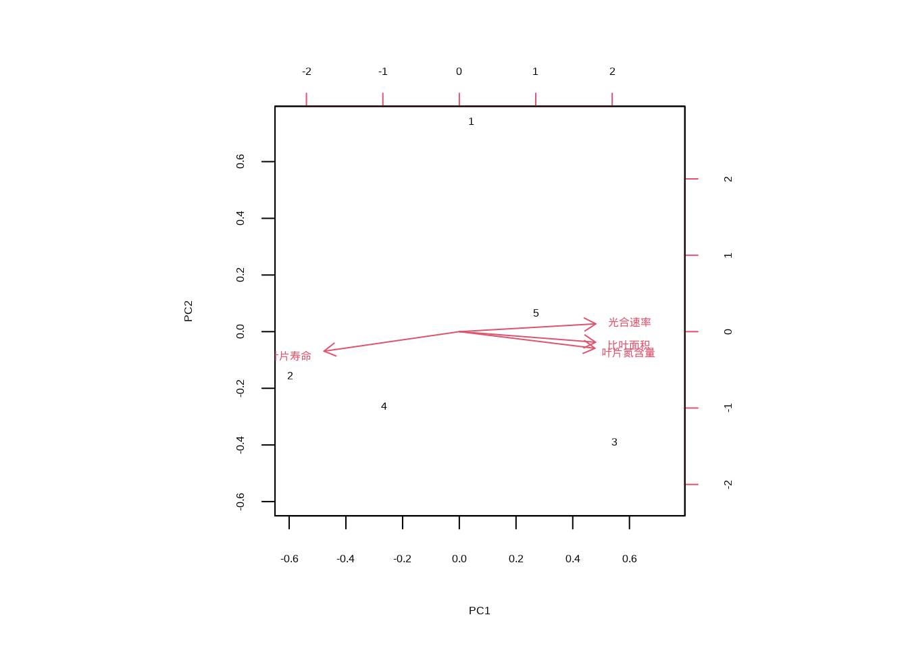
图4.8: 功能性状相关性矩阵图和主成分分析双标图
对于经济型谱分析，可以使用线性模型来检验性状间的权衡关系。图4.9展示了叶片经济型谱关系的散点图：
| Estimate | Std. Error | t value | Pr(>|t|) | |
|---|---|---|---|---|
| (Intercept) | 3.6704042 | 0.6898330 | 5.320714 | 0.0129693 |
| 比叶面积 | 0. | 367956| 0 | 0426408| 12 | 588774| | 0.0010808| |
| Estimate | Std. Error | t value | Pr(>|t|) | |
|---|---|---|---|---|
| (Intercept) | 20.9853325 | 1.6234494 | 12.926385 | 0.0009994 |
| 比叶面积 | -0 | 7484065| 0 | 1003507| -7 | 457912| | 0.0049911| |
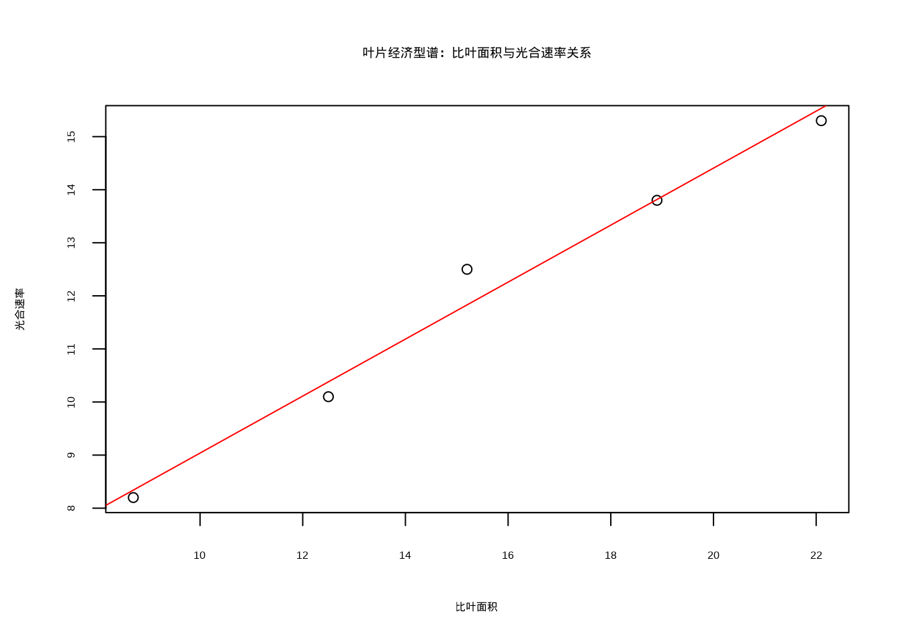
图4.9: 叶片经济型谱关系散点图
结果解释与生态学意义：功能性状相关性分析的结果解释需要结合相关系数的数值大小、显著性水平和生态学背景。相关系数\(r\)的绝对值大小反映了性状间关系的强度：\(|r| > 0.7\)表示强相关，\(0.5 < |r| \leq 0.7\)表示中等相关，\(0.3 < |r| \leq 0.5\)表示弱相关，\(|r| \leq 0.3\)表示无实质性相关。相关系数的正负号指示了关系的方向：正相关表示性状间协同变化，负相关表示性状间存在权衡关系。
在生态学解释中，显著的正相关可能反映了功能综合征的存在，如快速生长策略相关的性状组合；显著的负相关则可能指示资源分配上的权衡，如在防御和生长之间的投资权衡。主成分分析中，前几个主成分的方差贡献率反映了数据的主要变异方向，通常认为累计方差贡献率超过70%的主成分能够较好地代表原始数据的变异结构。这些分析方法为生态学家提供了强大的工具来量化功能性状间的相关模式，揭示生物适应策略的普遍规律。
4.4.3 种内相关性
种内相关性分析关注同一物种个体在空间上的分布模式及其形成机制，是理解种群生态学过程和环境适应策略的重要工具。空间分布模式反映了物种的繁殖特性、扩散能力以及对环境异质性的响应。
空间分布模式：物种的空间分布主要有三种基本模式：聚集分布、随机分布和均匀分布。聚集分布表现为个体在某些区域集中分布，形成斑块状格局，这通常由有限的种子扩散、克隆生长、环境异质性或社会行为等因素导致。其数学描述可以通过空间点过程模型来表示，如泊松聚类过程。随机分布则表现为个体在空间上无规律地分布，符合完全空间随机性假设，数学上可以用齐次泊松过程来描述：\(P(N(A)=k) = \frac{(\lambda|A|)^k e^{-\lambda|A|}}{k!}\)，其中\(\lambda\)为强度参数，\(|A|\)为区域面积。均匀分布表现为个体在空间上等距分布，通常由强烈的种内竞争或领地行为导致。
这些分布模式的生态学意义在于它们反映了种内相互作用和环境异质性的综合影响。聚集分布常见于依赖母树扩散的植物物种或具有社会行为的动物种群；随机分布通常出现在环境均质且个体间无相互作用的条件下；均匀分布则多见于资源竞争激烈的环境中。
聚集指数：为了量化空间分布模式，生态学家开发了多种聚集指数。方差均值比是最基础的聚集度检验方法，其定义为：\(I = \frac{s^2}{\bar{x}}\)，其中\(s^2\)为样本方差，\(\bar{x}\)为样本均值。当\(I > 1\)时表示聚集分布，\(I = 1\)时表示随机分布，\(I < 1\)时表示均匀分布。Morisita指数是另一种常用的空间聚集度量，其定义为：\(I_\delta = n \frac{\sum x_i(x_i-1)}{N(N-1)}\)，其中\(n\)为样方数，\(x_i\)为第\(i\)个样方中的个体数，\(N\)为总个体数。Morisita指数对样本大小不敏感，在生态学调查中应用广泛。
这些聚集指数的生态学意义在于它们能够量化种内空间分布模式，为理解种群动态、资源利用策略和种内竞争提供定量依据。在保护生物学中，聚集指数有助于评估物种的生存状况和制定有效的保护策略。
在R语言中，种内空间分布分析可以通过以下方法实现：
# 创建示例空间分布数据
spatial_data <- c(3, 7, 2, 8, 1, 9, 4, 6, 2, 5) # 10个样方中的个体数
# 计算方差均值比
mean_count <- mean(spatial_data)
variance_count <- var(spatial_data)
variance_mean_ratio <- variance_count / mean_count
print(paste("方差均值比:", variance_mean_ratio))## [1] "方差均值比: 1.60992907801418"# 计算Morisita指数
n_quadrats <- length(spatial_data)
total_individuals <- sum(spatial_data)
numerator <- n_quadrats * sum(spatial_data * (spatial_data - 1))
denominator <- total_individuals * (total_individuals - 1)
morisita_index <- numerator / denominator
print(paste("Morisita指数:", morisita_index))## [1] "Morisita指数: 1.11933395004625"# 判断分布模式
if (variance_mean_ratio > 1.2) {
print("分布模式：聚集分布")
} else if (variance_mean_ratio < 0.8) {
print("分布模式：均匀分布")
} else {
print("分布模式：随机分布")
}## [1] "分布模式：聚集分布"结果解释与生态学意义：空间分布模式的分析结果需要结合聚集指数的数值和统计显著性来解释。方差均值比\(I\)的判断标准为：\(I > 1.2\)表示聚集分布，\(0.8 \leq I \leq 1.2\)表示随机分布，\(I < 0.8\)表示均匀分布。Morisita指数的判断标准类似：\(I_\delta > 1\)表示聚集分布，\(I_\delta = 1\)表示随机分布，\(I_\delta < 1\)表示均匀分布。
在生态学解释中，聚集分布通常指示存在环境异质性、有限的扩散能力或社会行为；随机分布可能出现在环境均质且个体间无相互作用的条件下；均匀分布则通常由强烈的种内竞争导致。这些分布模式的识别对于理解种群动态、设计抽样方案和制定保护策略具有重要意义。例如，对于聚集分布的物种，保护措施需要关注其核心分布区；对于均匀分布的物种，则需要考虑其竞争机制和资源利用策略。这些分析方法为生态学家提供了量化种内空间分布模式的工具，支持种群生态学和保护生物学研究。
4.4.4 种间相关性
种间相关性分析是群落生态学的核心内容，旨在揭示不同物种在空间分布、资源利用和生态功能上的相互关系。这些关系反映了物种间的竞争、互利、捕食等生态过程，是理解群落构建机制和生态系统稳定性的关键。
种间关联：种间关联主要分为三种类型：正相关、负相关和不相关。正相关表现为两个物种在空间上倾向于共同出现，这可能源于互利共生关系、相似的环境需求或共同的扩散限制。数学上可以用相关系数或关联指数来量化：\(\phi = \frac{ad-bc}{\sqrt{(a+b)(c+d)(a+c)(b+d)}}\)，其中\(a,b,c,d\)为2×2列联表中的频数。负相关则表现为两个物种在空间上相互排斥，通常由竞争排斥、化感作用或不同的生态位需求导致。不相关则表示两个物种的分布相互独立，没有显著的生态联系。
这些关联模式的生态学意义在于它们反映了物种间相互作用的性质和强度。正相关可能指示物种间的协同进化或生态位重叠，负相关则暗示强烈的竞争或生态位分化。在恢复生态学中，种间关联分析有助于设计合理的物种配置方案；在保护生物学中，它有助于识别关键物种和功能群。
生态网络构建：基于种间相关性可以构建生态网络，从而可视化物种间相互作用的复杂结构。网络构建通常基于相关性矩阵，通过设定阈值将显著的相关关系转化为网络边。网络拓扑特征分析包括度分布、聚类系数、模块性等指标的计算。度分布描述了物种连接数的分布规律，数学上可以用幂律分布\(P(k) \sim k^{-\gamma}\)来拟合。聚类系数衡量了网络中三角形的比例，反映了物种间相互作用的局部聚集性。模块性则量化了网络被划分为相对独立模块的程度。
这些网络特征的生态学意义在于它们揭示了物种间相互作用的结构特性。高度模块化的网络可能反映了生态系统的功能分区，而高聚类系数则暗示了物种间的功能互补。在网络生态学中，这些分析有助于理解生态系统的稳定性和恢复力，预测物种灭绝的级联效应。
在R语言中，种间相关性分析和生态网络构建可以通过以下方法实现：
load(file="data/species_net_data.RData")
# 计算种间关联矩阵
library(vegan)
association_matrix <- cor(t(species_data))
knitr::kable((association_matrix), caption = "种间关联矩阵", booktabs = TRUE) %>%
kableExtra::kable_styling(latex_options = c("hold_position"))| 物种A| | 物种B| | 物种C| | 物种D| | |
|---|---|---|---|---|
| 物种A | | 1.0000000| | 0.4082483| | 0.6666667| | 0.6123724| |
| 物种B | | 0.4082483| | 1.0000000| | 0.4082483| | 0.2500000| |
| 物种C | | 0.6666667| | 0.4082483| | 1.0000000| | 0.4082483| |
| 物种D | | 0.6123724| | 0.2500000| | 0.4082483| | 1.0000000| |
# 构建生态网络
library(igraph)
# 设定相关性阈值
threshold <- 0.3
adj_matrix <- ifelse(abs(association_matrix) > threshold, 1, 0)
diag(adj_matrix) <- 0 # 移除自连接
# 创建网络对象
network <- graph_from_adjacency_matrix(adj_matrix, mode = "undirected")
# 计算网络拓扑特征
degree_dist <- degree(network)
clustering_coef <- transitivity(network, type = "global")
print(paste("平均度:", mean(degree_dist)))## [1] "平均度: 2.5"## [1] "聚类系数: 0.75"# 可视化网络
plot(network,
vertex.size = 15,
vertex.color = "lightblue",
vertex.label.family = "simhei",
vertex.label.color = "black",
edge.color = "gray",
main = "种间关联网络",
main.family = "simhei"
)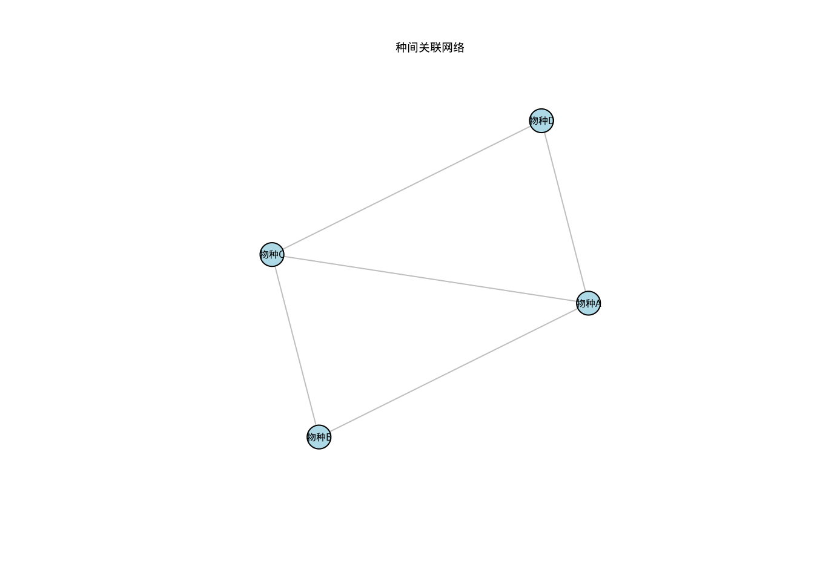
图4.10: 种间关联网络图
结果解释与生态学意义：种间相关性分析的结果解释需要结合相关系数的数值、显著性水平和生态学机制。对于种间关联系数\(\phi\)，通常认为：\(|\phi| > 0.3\)表示强关联，\(0.2 < |\phi| \leq 0.3\)表示中等关联，\(|\phi| \leq 0.2\)表示弱关联。正关联\(\phi > 0\)表示物种倾向于共同出现，可能源于互利共生或相似的环境需求；负关联\(\phi < 0\)表示物种相互排斥，可能源于竞争或不同的生态位需求。
在网络分析中，度分布的特征反映了物种在群落中的连接性，幂律分布\(\gamma > 2\)的网络通常具有较好的稳定性。聚类系数\(C > 0.5\)表示网络中三角形结构丰富，可能反映了功能互补的物种组合。模块性\(Q > 0.3\)通常被认为是显著的模块结构，反映了生态系统的功能分区。这些网络特征有助于理解生态系统的稳定性和功能组织，为保护关键物种和维持生态系统功能提供科学依据。这些分析方法为生态学家提供了研究种间相互作用的定量工具，支持群落生态学和生态系统管理研究。
4.4.5 群落相似性
群落相似性分析是生态学中研究群落组成变化和空间格局的核心方法，涉及多种统计技术来量化和可视化群落间的相似性和差异性。这些方法帮助生态学家理解环境梯度、地理距离和历史因素对群落构建的影响。
Mantel检验：Mantel检验是一种用于检验两个距离矩阵相关性的统计方法，在生态学中常用于检验环境距离与群落距离之间的关系。其基本原理是通过置换检验评估两个矩阵元素间的相关性显著性，数学上计算Mantel统计量：\(r_M = \frac{\sum_{i<j}(x_{ij}-\bar{x})(y_{ij}-\bar{y})}{\sqrt{\sum_{i<j}(x_{ij}-\bar{x})^2\sum_{i<j}(y_{ij}-\bar{y})^2}}\)，其中\(x_{ij}\)和\(y_{ij}\)分别为两个距离矩阵中的元素。生态学意义在于Mantel检验能够识别环境过滤、扩散限制等生态过程对群落构建的相对贡献，是群落生态学中空间分析的重要工具。
排序分析（ordination）：排序分析是一类降维技术，用于在低维空间中可视化高维的群落数据。主成分分析（PCA）适用于线性响应的环境梯度，通过特征值分解找到数据变异的主要方向，数学上求解协方差矩阵的特征向量：\(\Sigma v = \lambda v\)。对应分析（CA）基于卡方距离，更适合物种多度数据，能够同时排序样方和物种。非度量多维标度（NMDS）基于秩次距离，不假设线性关系，对异常值不敏感，通过迭代优化使排序空间中的距离与原始距离矩阵尽可能一致。这些排序方法的生态学意义在于它们能够可视化群落结构和环境梯度，识别主导的生态过程和环境因子。
聚类分析（clustering）：聚类分析用于识别群落类型和进行生态区划。层次聚类基于距离矩阵构建树状结构，常用方法包括单连接、完全连接和平均连接法，通过逐层合并最相似的样本形成聚类树。\(k\)均值聚类是一种划分方法，通过迭代优化将样本划分为k个簇，最小化簇内平方和：\(\sum_{i=1}^k\sum_{x\in C_i}||x-\mu_i||^2\)。这些聚类方法的生态学意义在于它们能够识别群落类型和生态区划，为生物多样性保护和生态系统管理提供科学依据。
Beta多样性：Beta多样性量化了群落组成在空间或时间上的变化，反映了物种周转和嵌套性两个组分。基于距离矩阵的方法如Bray-Curtis距离可以直接计算群落差异，而基于组分分解的方法可以将Beta多样性分解为物种周转（物种替换）和嵌套性（物种丢失）两部分：\(\beta_{total} = \beta_{turnover} + \beta_{nestedness}\)。生态学意义在于Beta多样性分析能够揭示生物多样性形成的机制，如环境过滤、扩散限制和生态位过程，是理解生物地理格局和生态系统功能的关键。
在R语言中，群落相似性分析可以通过以下方法实现：
library(vegan)
load(file="data/community_net_data.RData")
# Mantel检验
comm_dist <- vegdist(community_data, method = "bray")
env_dist <- dist(env_data)
mantel_test <- mantel(comm_dist, env_dist)
print(mantel_test)##
## Mantel statistic based on Pearson's product-moment correlation
##
## Call:
## mantel(xdis = comm_dist, ydis = env_dist)
##
## Mantel statistic r: 0.4779
## Significance: 0.013
##
## Upper quantiles of permutations (null model):
## 90% 95% 97.5% 99%
## 0.278 0.358 0.408 0.513
## Permutation: free
## Number of permutations: 999# 排序分析 - PCA
pca_result <- rda(community_data, scale = TRUE)
knitr::kable(summary(pca_result)$cont[[1]],
caption = "群落相似性PCA分析结果",
booktabs = TRUE) %>%
kableExtra::kable_styling(latex_options = c("hold_position"))| PC1 | PC2 | PC3 | PC4 | PC5 | |
|---|---|---|---|---|---|
| Eigenvalue | 2.8024582 | 1.7268720 | 0.3559326 | 0.0857154 | 0.0290218 |
| Proportion Explained | 0.5604916 | 0.3453744 | 0.0711865 | 0.0171431 | 0.0058044 |
| Cumulative Proportion | 0.5604916 | 0.9058660 | 0.9770526 | 0.9941956 | 1.0000000 |
表4.9展示了群落相似性的主成分分析结果，包括各主成分的特征值、方差解释比例和累积方差解释比例，为理解群落组成的多维变异结构提供了量化指标。
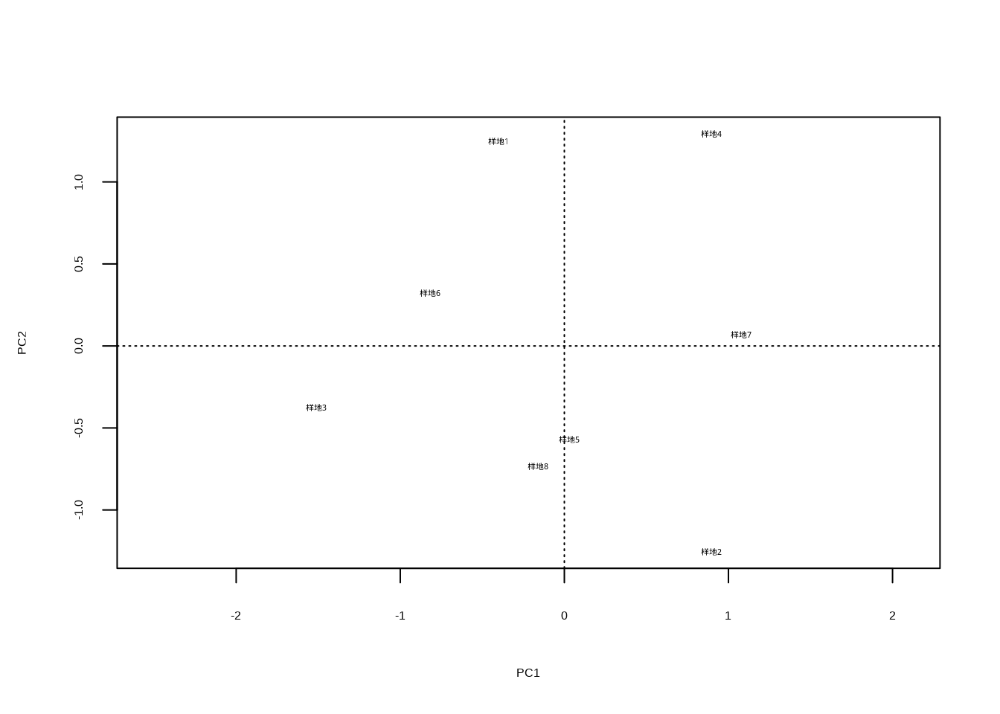
这段代码生成图??，使用plot()函数可视化PCA分析结果，display = "sites"参数指定只显示样方在排序空间中的位置。该散点图展示了不同群落样方在主成分1和主成分2构成的二维空间中的分布，样方间的距离反映了群落组成的相似性，距离越近表示群落组成越相似。这种可视化方法能够直观地展示群落结构的梯度变化、识别群落类型以及发现环境梯度对群落组成的影响模式。
# 排序分析 - NMDS
comm_dist <- vegdist(community_data, method = "bray")
nmds_result <- monoMDS(comm_dist)
plot(nmds_result, type = "t")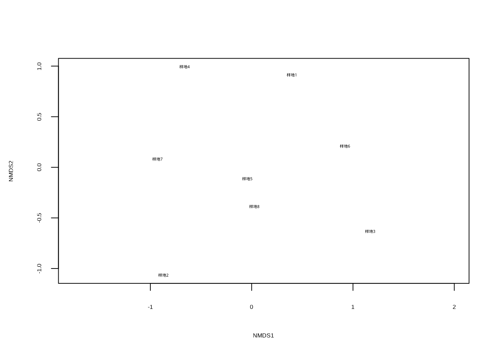
这段代码执行非度量多维尺度分析并生成图??。vegdist()函数使用Bray-Curtis距离计算群落相似性矩阵，monoMDS()函数执行NMDS排序，plot()函数可视化结果，type = "t"参数指定显示样方标签。NMDS是一种非参数排序方法，不依赖线性假设，特别适用于生态学中常见的非线性关系数据。该散点图展示了样方在NMDS排序空间中的分布，样方间距离反映了群落组成的Bray-Curtis相似性，能够更好地处理物种多度数据的非线性关系和零值问题。
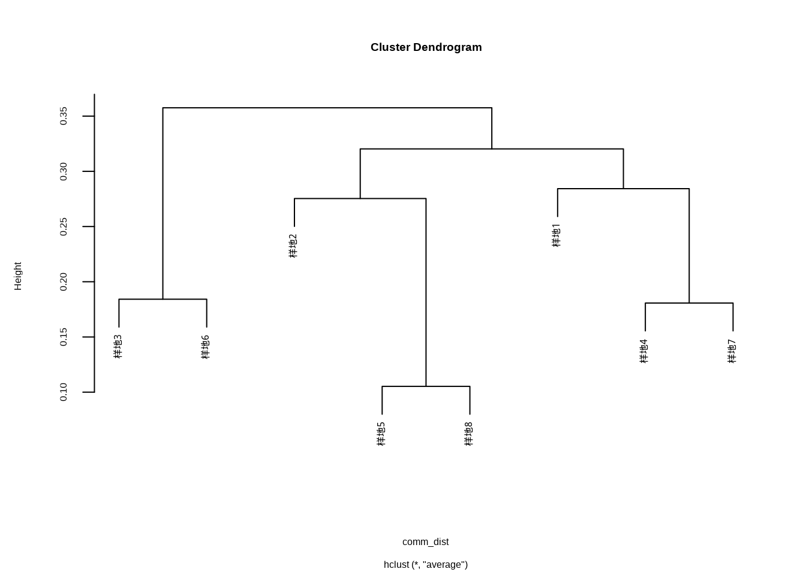
这段代码执行层次聚类分析并生成图??。hclust()函数基于群落Bray-Curtis距离矩阵执行层次聚类，method = "average"参数指定使用平均连接法（UPGMA），plot()函数可视化聚类树状图。层次聚类通过逐步合并最相似的群落样方，构建嵌套的群落分类结构，树状图的高度表示群落间的相异性程度。这种可视化方法能够清晰地展示群落的分类关系、识别群落类型以及确定合适的分类等级，为群落生态学的分类和分区研究提供直观依据。
# Beta多样性计算
beta_div <- betadiver(community_data, method = "w")
knitr::kable(as.matrix(beta_div),
caption = "群落相似性Beta多样性分析结果",
booktabs = TRUE) %>%
kableExtra::kable_styling(latex_options = c("hold_position"))| 样地1| | 样地2| | 样地3| | 地4| 样地 |
样地6| | ||||
|---|---|---|---|---|---|---|---|---|
| 样地1 | | .0000000| | .1111111| | .1111111| | .1111111| | .1111111| | .1111111| | .1111111| | .1111111| |
| 样地2 | | .1111111| | .0000000| | .0000000| | .0000000| | .0000000| | .0000000| | .0000000| | .0000000| |
| 样地3 | | .1111111| | .0000000| | .0000000| | .0000000| | .0000000| | .0000000| | .0000000| | .0000000| |
| 样地4 | | .1111111| | .0000000| | .0000000| | .0000000| | .0000000| | .0000000| | .0000000| | .0000000| |
| 样地5 | | .1111111| | .0000000| | .0000000| | .0000000| | .0000000| | .0000000| | .0000000| | .0000000| |
| 样地6 | | .1111111| | .0000000| | .0000000| | .0000000| | .0000000| | .0000000| | .0000000| | .0000000| |
| 样地7 | | .1111111| | .0000000| | .0000000| | .0000000| | .0000000| | .0000000| | .0000000| | .0000000| |
| 样地8 | | .1111111| | .0000000| | .0000000| | .0000000| | .0000000| | .0000000| | .0000000| | .0000000| |
表4.11展示了群落相似性的Beta多样性分析结果，使用Whittaker方法计算群落间的相异性矩阵，为理解群落组成的空间变异模式提供了量化指标。
结果解释与生态学意义：群落相似性分析的结果解释需要结合统计显著性、效应大小和生态学背景。对于Mantel检验，通常认为\(p < 0.05\)表示环境距离与群落距离存在显著相关性，而Mantel统计量\(r_M\)的大小反映了相关性的强度：\(|r_M| > 0.3\)表示强相关，\(0.2 < |r_M| \leq 0.3\)表示中等相关，\(|r_M| \leq 0.2\)表示弱相关。
在排序分析中，前两个排序轴通常能够解释数据的主要变异，累计解释率超过50%通常被认为是可接受的。排序图中样本点的聚集程度反映了群落的相似性，而环境向量的长度和方向指示了环境因子对群落变异的影响强度。在聚类分析中，树状图的切割高度决定了聚类的粒度，通常选择在树状图分支较长的位置进行切割。Beta多样性的解释需要考虑其组分：高周转率\(\beta_{turnover}\)表示物种替换是群落差异的主要机制，而高嵌套性\(\beta_{nestedness}\)表示物种丢失是主要机制。
这些分析结果的生态学解释需要结合具体的研究问题。例如，显著的环境-群落相关性可能支持环境过滤假说；高度的Beta多样性可能反映了强烈的生态位分化或扩散限制。这些分析方法为生态学家提供了全面的工具集来研究群落相似性和多样性格局，支持群落生态学和生物地理学研究。
4.5 总结
本章系统介绍了生态学中相关性与相似性分析的理论基础、方法体系及其在生态学研究中的广泛应用。相关性与相似性分析作为生态统计学的核心内容，为理解生物与环境、物种间以及群落间的复杂关系提供了定量化的工具。
在相关性统计基础部分，我们详细讨论了多种相关性度量方法。Pearson相关系数适用于线性关系的量化，Spearman秩相关和Kendall’s τ则能够处理单调但非线性的关系。偏相关分析通过控制混杂变量的影响，揭示了变量间的直接关系。距离相关和互信息进一步扩展了相关性分析的能力，能够检测复杂的非线性关系和依赖模式。这些方法的选择需要根据数据的分布特征、关系类型以及研究问题的性质来决定。
自相关分析关注数据在时间和空间维度上的依赖性。时间自相关通过自相关函数（ACF）和偏自相关函数（PACF）揭示了时间序列中的周期性、趋势和记忆效应，而平稳性检验则为时间序列分析提供了基础假设验证。空间自相关分析则通过变异函数、全局空间自相关指数（如Moran’s I和Geary’s C）以及局部空间自相关（LISA分析）来量化空间格局，识别空间聚集、离散或随机分布模式。这些分析对于理解种群动态、物种分布和环境梯度的空间结构具有重要意义。
系统发育相关性分析将进化历史纳入生态关系的考量。系统发育信号分析（如Blomberg’s K和Pagel’s λ）评估了性状在系统发育树上的保守性程度，系统发育独立对比（PIC）和系统发育广义最小二乘法（PGLS）则能够去除系统发育非独立性对性状间关系分析的影响，而通过分析系统发育聚集与分散则有助于推断群落形成的主导机制。这些方法为理解生物的进化历史和生态功能提供了进化生态学的视角。
相似性与距离分析构成了群落生态学和功能生态学的核心方法体系。常用相似性系数根据数据类型分为二元数据相似性（Jaccard、Sørensen系数）和数量数据相似性（Bray-Curtis距离、Morisita-Horn指数），而传统距离度量（欧氏距离、Mahalanobis距离）则在多元数据分析中发挥重要作用。功能性状相关性分析揭示了生物在资源分配和生态策略上的权衡关系，经济型谱理论则提供了理解植物功能策略普遍模式的框架。
种内相关性分析通过空间分布模式和聚集指数量化了同一物种个体在空间上的分布特征，反映了种内相互作用和环境异质性的综合影响。种间相关性分析则通过种间关联和生态网络构建揭示了物种间竞争、互利等相互作用的结构特性。群落相似性分析整合了Mantel检验、排序分析、聚类分析和Beta多样性等多种方法，为理解群落构建机制、环境梯度影响以及生物地理格局提供了全面的分析工具。
在结果解释方面，本章为各种统计量提供了明确的数值标准和生态学解释框架。相似性系数的数值范围、相关系数的强度分级、聚集指数的判断标准以及网络拓扑特征的阈值都为生态学家提供了实用的参考依据。这些标准的应用需要结合具体的研究背景和生态学预期，避免机械地套用数值标准而忽视生态学机制的理解。
总之，相关性与相似性分析构成了生态统计学的重要支柱，它们不仅提供了量化生态关系的数学工具，更重要的是为理解生态系统的结构、功能和动态提供了理论框架。随着生态学研究的深入和计算技术的发展，这些方法将继续在生态学理论构建、生态系统管理和生物多样性保护中发挥关键作用。掌握这些分析方法并正确理解其生态学含义，对于开展严谨的生态学研究具有重要意义。
4.6 综合练习
4.6.1 练习一：森林生态系统多变量相关性分析
背景：某生态学研究团队在温带森林中设置了40个固定样地，测量了树木胸径、树高、林分密度、土壤pH值、土壤有机质含量和林下光照强度等变量。
任务：本练习要求你使用Pearson、Spearman和Kendall’s τ三种方法分析树木胸径与树高的相关性，比较不同方法的结果并解释差异原因。进行偏相关分析，在控制林分密度的影响后，重新评估树木胸径与树高的关系。使用距离相关分析检验土壤pH值与土壤有机质含量之间的关系，判断是否存在非线性关系。构建环境因子（土壤pH、有机质、光照）与林分特征（胸径、树高、密度）的互信息网络，识别关键的环境驱动因子。
要求：提供完整的R代码实现，对每种相关性方法的结果进行生态学解释，讨论不同方法在生态学应用中的优缺点。
数据文件：data/exercise1_forest_data.RData，包含40个森林样地的多变量数据。
4.6.2 练习二：鸟类种群时间序列与空间格局分析
背景：某自然保护区对10种常见鸟类进行了为期15年的种群监测，同时在保护区内设置了50个固定观测点记录鸟类丰富度。
任务：本练习要求你选择3种具有不同生态习性的鸟类，分析其种群数量的时间自相关模式（ACF和PACF）。检验这些鸟类种群时间序列的平稳性，如发现非平稳性，进行适当的差分处理。使用变异函数分析鸟类丰富度的空间分布格局，估计块金值、基台值和变程。进行局部空间自相关分析（LISA和Getis-Ord Gi*），识别鸟类丰富度的热点和冷点区域。使用克里金插值生成保护区鸟类丰富度的空间分布预测图。
要求：提供时间序列图和空间分布图，解释时间自相关和空间自相关的生态学含义，讨论空间插值结果在保护管理中的应用价值。
数据文件：data/exercise2_bird_data.RData，包含10种鸟类15年的种群时间序列数据和50个观测点的空间数据。
4.6.3 练习三：植物功能性状与系统发育相关性分析
背景：某植物生态学研究调查了30种木本植物的功能性状，并构建了这些物种的系统发育树。测量的性状包括比叶面积、叶片氮含量、光合速率、木材密度和最大树高等。
任务：本练习要求你计算各功能性状间的Pearson相关系数矩阵，识别显著的相关关系。使用Blomberg’s K和Pagel’s λ检验各性状的系统发育信号强度。对具有显著系统发育信号的性状，使用系统发育独立对比（PIC）重新分析性状间关系。构建功能性状的经济型谱，分析比叶面积、叶片氮含量和光合速率之间的权衡关系。使用主成分分析探索功能性状的多维协变模式。
要求：提供系统发育树与性状分布的可视化，比较传统相关分析与PIC分析的结果差异，讨论功能性状相关性的生态适应意义。
数据文件：data/exercise3_plant_data.RData，包含30种木本植物的功能性状数据和系统发育树。